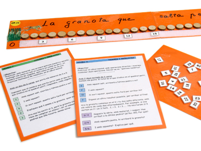

Es una serie alineada de puntos, donde los niños y niñas pueden situar los primeros números naturales, desde el 1 hasta el 30, con la conocida imagen de la rana que salta, para indicar que se debe contar dejando cada vez un número de espacios entre medio, según nos indican las instrucciones que acompañan el material.
Utilidad: Practicar unos primeros patrones numéricos sencillos, que requieren hacer cálculo mental con estimación de resultados. Preparar el futuro trabajo de la serie o resta numérica.
Para los alumnos del ciclo medio también ayuda a distinguir los casos en que un número contiene otro, un número exacto de veces y los casos en que no es así.
Nivel: Ciclo inicial y tercer curso de primaria.
Procedencia: De construcción propia del Gamar.
Fuente: GAMAR - CL-OP-17 |

|